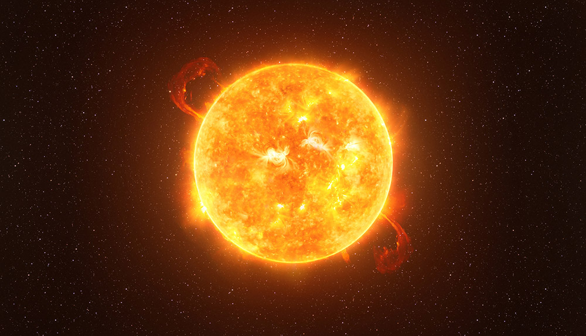

Info:Oberflächentemperatur: 5.778 KRadius: 696.340 km Entfernung zur Erde: 149.600.000 km Masse: 1,989 × 10^30 kg Gravitation: 274 m/s² Helligkeit: -26,74 Alter: 4,603 × 10^9 Jahre |
 |
Die Sonne ist der Stern, der der Erde am nächsten ist und das Zentrum des Sonnensystems bildet. Sie ist ein durchschnittlich großer Stern im äußeren Drittel der Milchstraße. Die Sonne ist ein Zwergstern, der sich im Entwicklungsstadium der Hauptreihe befindet. Wikipedia |